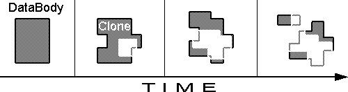
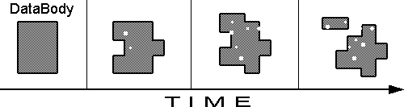
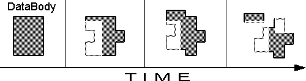

| Den Datenkörper klonen Tracenoizer findet Daten auf dem Internet die mit einem von den Benutzer spezifizierten Namen, Spitznamen und/oder eMailadresse verbunden ist und verschmilzt diese Information kontinuierlich in eine potentiell infinite Zahl von minimal verschiedenen Klonen welche in sich in Form von Homepages manifestieren. Die Homepages werden automatisch auf Server geladen, welche gratis Platz für Homepages auf dem Internet anbieten (wie beispielsweise geocities). Diese Clone-Pages sind nun öffentlich und können von Surfern abgerufen und von den Indexier-Robotern der Suchmaschinen indexiert werden, so dass bei einer Anfrage an die Suchmaschine im Suchresultat erscheinen. Wie entsteht eine Clone-Page? Der erste Such- und Analyseprozess, den TraceNoizer durchführt, ergibt zehn Schlüsselwörter oder "Themen". Zu jedem Thema wird eine HTML-Seite generiert mit Text und Bildern. Der Text setzt sich aus dem Inhalt der zu diesem Thema im Internet gefundenen Websites zusammen. Die Bilder kommen ebefalls von diesen Sites. Tracenoizer generiert ausserdem noch eine "index.html"-Seite, welche einen Begrüssungssatz, ein Bild und und Links zu den Themen enthält. Die Tracenoizer Engine startet periodisch neue Suchanfragen welche mit den Themen der letzten Clone-Page und publiziert mit den Resultate dieser Suche eine neue Clone-Page. Es entstehen so Clone-Pages, die zwar ähnlich sind, deren Inhalt sich aber thematisch immer mehr von der ersten Clonepage entfernt. Der zehnte Klon ist thematisch dem neunten Klon ähnlicher als dem ersten. Die Adresse jeder Clone-Page wird auch automatisch an eine Suchmaschine geschickt. Wenn nun jemand eine Suchanfrage zum Namen einer Person an diese Suchmaschine schickt, dann erscheinen im Suchresultat die von TraceNoizer generierten Klone. Da sie von richtigen Hompages nur weniges unterscheidet, wird relevante Information schwierig zu finden unter all den Redundanzen, die TraceNoizer generiert hat. Mit dieser Cloning-Prozedur wird der Datenkörper auf Folgende Art und Weise beeinflusst: 1.
1. Der Datenkörper wird langsam mit Disinformationen verfälscht, die thematisch verwandt sind miteinander. Wenn TraceNoizer die Prozedur anders behandeln würde könnte es folgendermassen herauskommen:
2.
3. 2. Zufallsbedingte Information wird publiziert. Der "richtige" Datenkörper ist immer noch sichtbar, weil die Falschinfomation nicht genug zielgerichtet ist. 3. Der grösste Teil der Disinformtion wird auf einmal publiziert. Die Disinformation kann neue Sucher/Spione täuschen, da sie nicht auf das Datum achten, es würde aber niemanden täuschen, der die Entwicklung über die zeit hinweg verfolgt. Es ist nötig zu betonen, dass TraceNoizer ein ausgeklügeltes Such-, Analyse und Publikationstool ist und dass es Homepages produziert, die sehr nahe and richtige persönliche Homepage nahe kommen, die von Menschen produziert wurden wovon es viele auf dem Internet gibt. Es ist das Ziel von TraceNoizer, nicht das Internet mit Müll zu füllen, sondern auf intelligente Weise zu täuschen. |